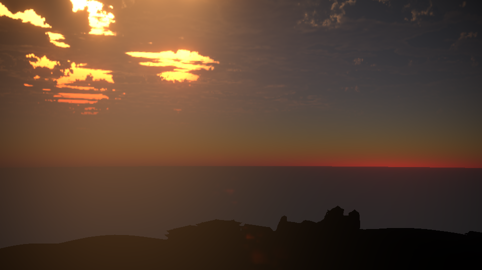

图形学 | 大型场景渲染
源于实验室与川大智胜的合作项目，川大智胜提供峨眉山模型，项目组利用图形学现有算法渲染模型。
渲染效果图

体积云

动态 IBL
参考资料
HDR
- https://www.slideshare.net/ozlael/hable-john-uncharted2-hdr-lighting
- https://docs.nvidia.com/gameworks/content/gameworkslibrary/graphicssamples/opengl_samples/hdrsample.htm (NVIDIA的HDR实现)
Bloom、Glare、Ghost效果
Auto Exposure
- https://docs.unrealengine.com/enus/Engine/Rendering/PostProcessEffects/AutomaticExposure
- https://docs.unity3d.com/Manual/PostProcessing-EyeAdaptation.html
- https://frictionalgames.blogspot.com/2012/09/tech-feature-hdr-lightning.html
- https://github.com/Unity-Technologies/PostProcessing/wiki/Auto-Exposure (Unity的auto exposure系统)
- https://knarkowicz.wordpress.com/2016/01/09/automatic-exposure/ (对automatic exposure的详细介绍)
LLL算法
- GPU Pro 6 Chapter: Real-Time Lighting via Light Linked List
- SIGGRAPH 2014 Course http://advances.realtimerendering.com/s2014/index.html
- 红宝书OIT顺序无关的透明渲染 数据结构图例可当作重要参考
- Github DX实现 https://github.com/wolfgangfengel/GPU-Pro-6/tree/master/03_Lighting
PBR算法
- SIGGRAPH Course中的 Physically Based Shading in Theory and Practice课程
- GDC中相关资料
- PBR理论 https://learnopengl.com/PBR/Theory
- Physically Based Rendering - From Theory to Implementation 3rd edition
- Real Shading in Unreal Engine 4 http://blog.selfshadow.com/publications/s2013-shading-course/karis/s2013_pbs_epic_notes_v2.pdf
- PBR相关资料合集 https://interplayoflight.wordpress.com/2013/12/30/readings-on-physically-based-rendering/
- 实验室2012级硕士学位论文(程赓)-基于物理的全局光照绘制系统
Fog
Parallax Cubemap
TAA
- High-Quality Temporal Super Sampling[Siggraph 2014]
- Temporal Super Sampling and Antialiasing[2014]
- Temporal Reprojection Anti-Aliasing in INSIDE[GDC][2016]
- An Excursion in Temporal Super Sampling[GDC][2016]
- Amortized Super Sampling[Siggraph Asia 2009]
- Adaptive Temporal Antialiasing[HPG 2018]
- From the Lab Bench: Real-Time Rendering Advances from NVIDIA Research (presented by NVIDIA)
- Conservative Z-Prepass for Frustum-Traced Irregular Z-Buffers
CSM算法
PCSS算法
- PCSS源码 http://developer.download.nvidia.com/whitepapers/2008/PCSS_Integration.pdf
- PCSS论文 http://developer.download.nvidia.com/shaderlibrary/docs/shadow_PCSS.pdf
PostProcessVolumatricLight算法
- GPU GEM3 Chapter 13. Volumetric Light Scattering as a Post-Process https://developer.nvidia.com/gpugems/GPUGems3/gpugems3_ch13.html
大气散射
- precompute atmosphere scattering,2008
- precompute atmosphere scattering的作者网站
- physically based sky atmosphere and cloud rendering in frostbite
Volumetric Cloud
- GPU Pro 7 Real-Time Volumetric Cloudscapes
- SIGGRAPH 2015 Advances in Realtime Rendering
- SIGGRAPH 2017 Advances in Realtime Rendering
书籍
- Real-time rendering
- GPU Pro
- GPU Gem
- ShaderX
会议
- GDC
- Advances in Real-Time Rendering in 3D Graphics and Games SIGGRAPH Course
- Ke-Sen Huang's conference pages
PBR纹理资源
- Texture Haven，免费的Scanned Texture